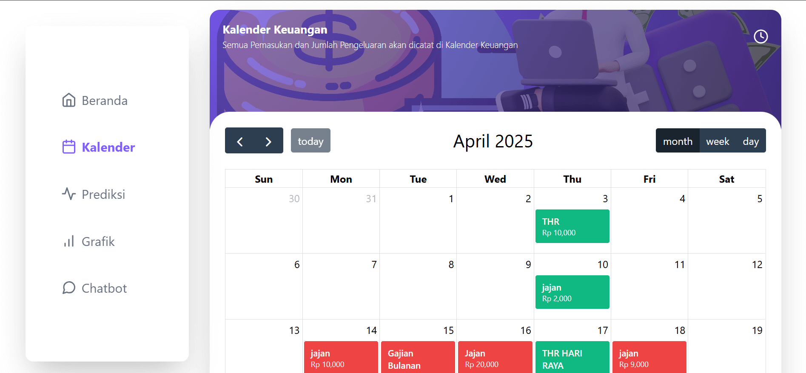

Detail Proyek
Kategori
Teknologi Edukasi
Platform
Website
Peran
Full Stack Developer
Bahasa
Javascript
Detail Proyek
Frontend
React, Tailwind
Backend
Node.js, Hapi
Database
PostgreeSQL
Durasi : 1 Bulan
Selesai : April, 2025
React.js
TailwindCSS
Hapi.js
PostgreeSQL
Kategori
Teknologi Edukasi
Platform
Website
Peran
Full Stack Developer
Bahasa
Javascript
Frontend
React, Tailwind
Backend
Node.js, Hapi
Database
PostgreeSQL
Smart Financial Tracker adalah aplikasi berbasis web yang dirancang untuk membantu pengguna dalam mengelola keuangan pribadi secara cerdas, efisien, dan modern. Aplikasi ini dilengkapi dengan fitur pencatatan otomatis pemasukan dan pengeluaran, kalender keuangan interaktif, grafik analisis, chatbot AI serta integrasi Mechine learning untuk memprediksi keuangan
Proyek ini dikerjakan oleh tim beranggotakan 6 orang. Saya bertanggung jawab penuh di bagian Backend untuk API dan juga Frontend untuk Integrasi API.
🎯 Tujuan Proyek
Membantu generasi muda (terutama pelajar dan mahasiswa) mengembangkan
kebiasaan finansial yang sehat. Menyediakan platform digital untuk
pencatatan dan prediksi keuangan secara otomatis. Meningkatkan literasi
keuangan dan kemandirian ekonomi sejak dini.